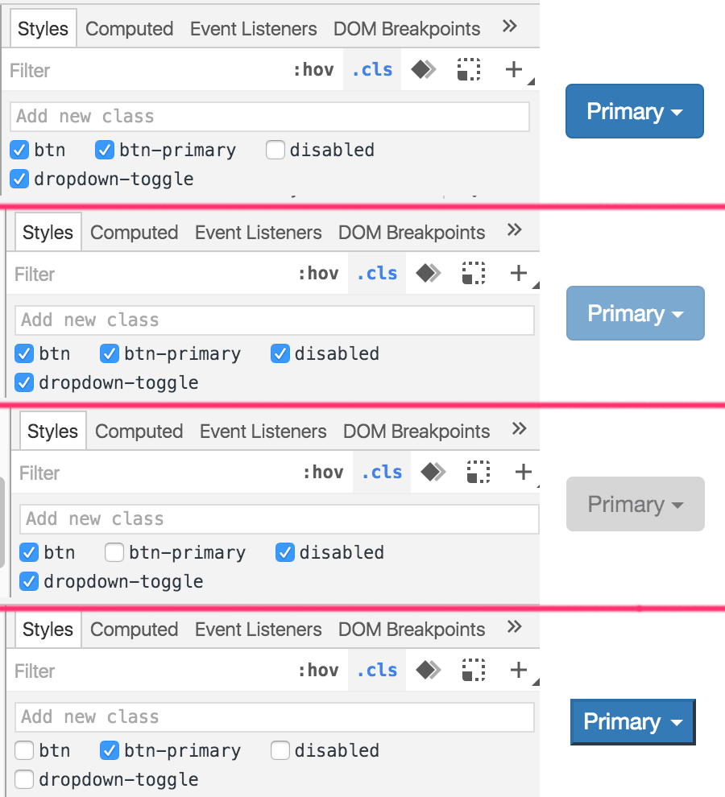
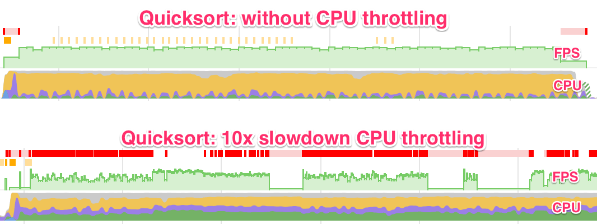
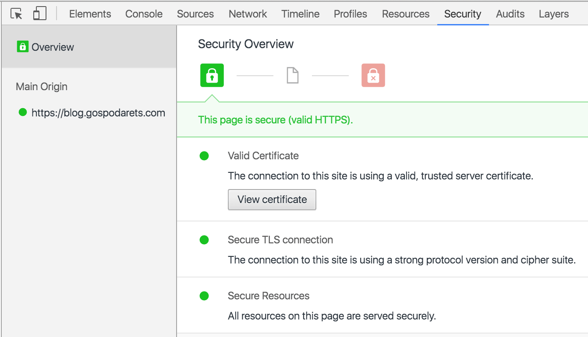
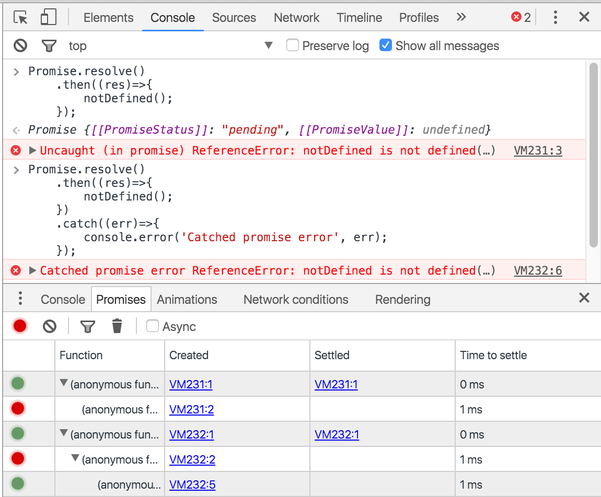

What's new in Chrome DevTools?
February 2016, DublinJS
What is your main browser for development?
Pane to toggle element classes

CPU Throttling

Security panel

Promises inspection and uncaught errors

Recording video in Chrome?
Recording video in Chrome!